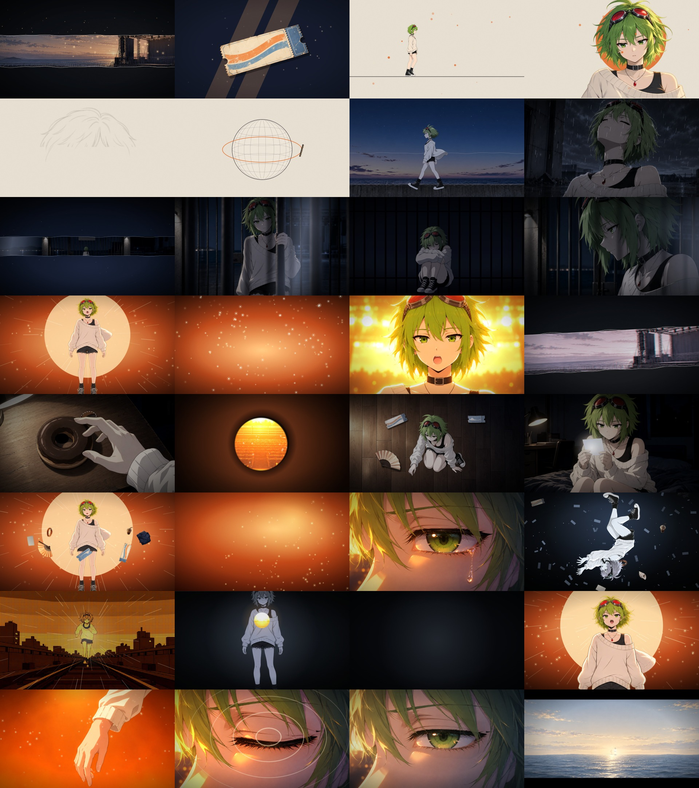

无歌词重渲染总览：从网页源工程关闭歌词与字形效果，保留时间数据，选取 32 个时刻。公开版只展示静帧，不附原视频；原资源位置保存在 original_media 中供恢复参考。
这是无视频阅读版。静帧来自本地制作素材，展示构图而非动态效果。完整结构、做法与关联请导入同目录 project.json；用法见 README.md。

无歌词重渲染总览：从网页源工程关闭歌词与字形效果，保留时间数据，选取 32 个时刻。公开版只展示静帧，不附原视频；原资源位置保存在 original_media 中供恢复参考。